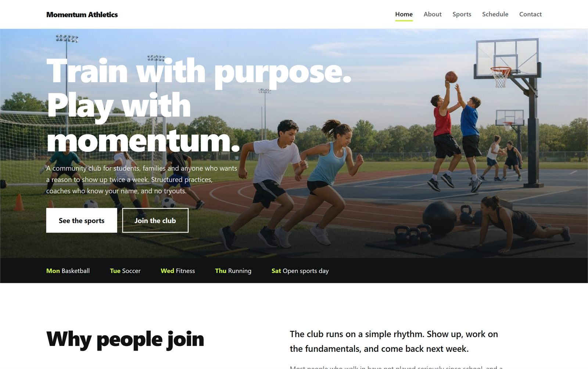

01
Multi-page website
Momentum Athletics

A site for a community sports club, spread across five pages so someone can go from the homepage to a specific sport, check the training schedule and find the contact form without getting lost.
- Role
- Designed and built it on my own
- Built with
- HTML, CSS, JavaScript, GSAP
- Pages
- Home, About, Sports, Schedule, Contact
Build notes
What's in it
- Five pages sharing one header, one footer and one stylesheet.
- A scroll driven sport switcher: the list on the right changes the photo held in the sticky column on the left.
- A looping marquee that speeds up slightly with scroll velocity.
- A contact form that confirms the submission without leaving the page.
How I built it
I wrote the header, the buttons and the spacing once, in a stylesheet all five pages share, instead of styling each page separately. When I changed the nav later I only had to change one file and every page followed.
What I took from it
Keeping a multi-page site consistent is a structure problem before it's a design problem. Deciding what gets shared, and where it lives, turned out to be the real work.